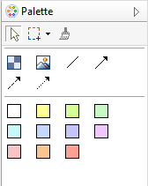
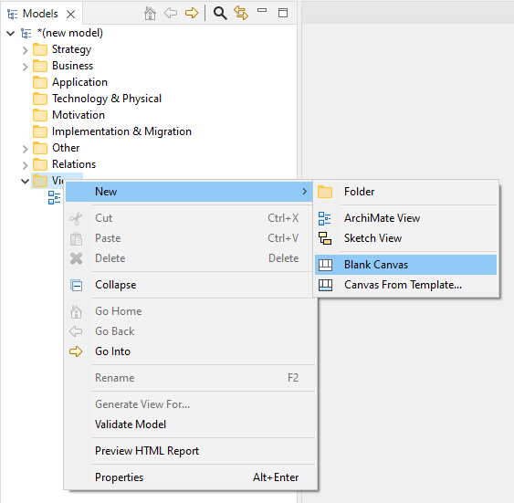
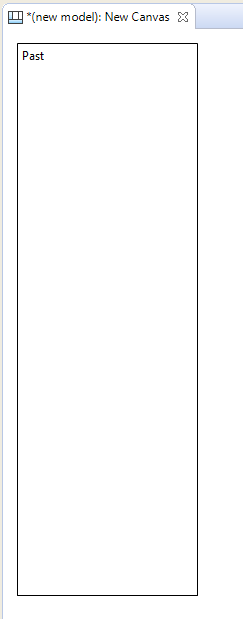
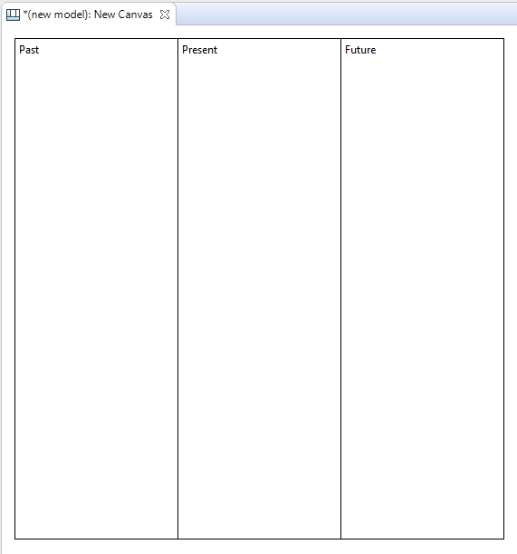
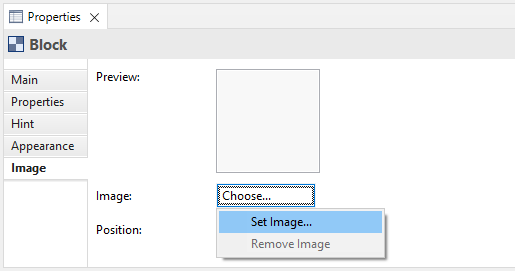
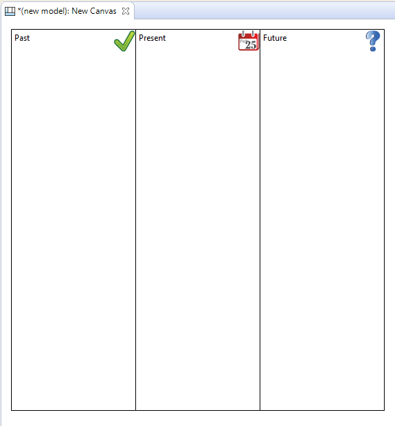
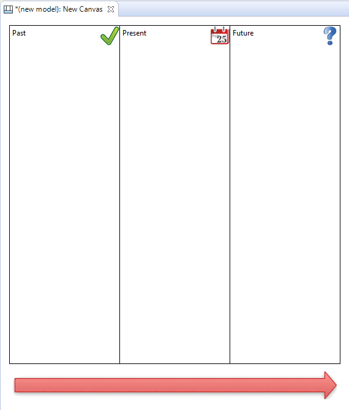
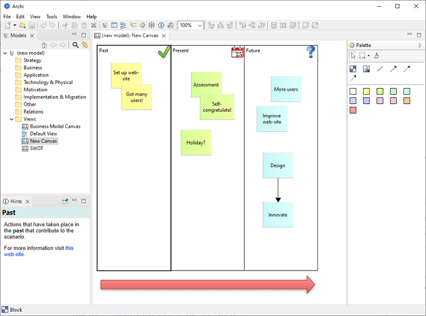
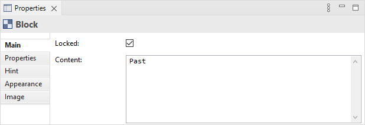
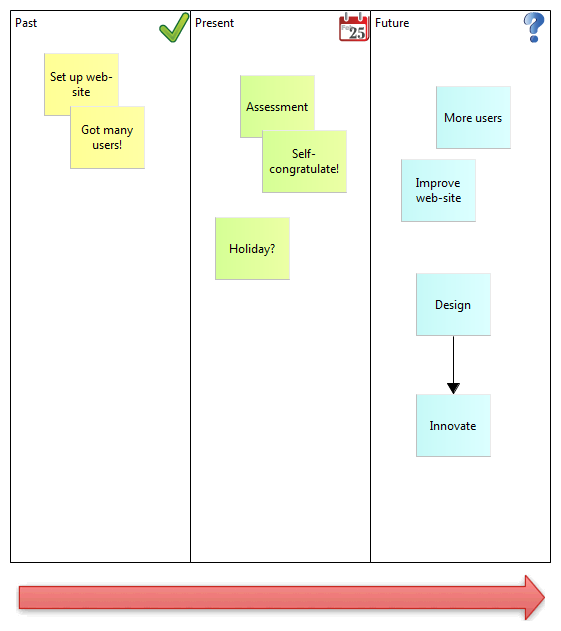

通常， Archi会将 “* .archimate”文件保存为单纯文本 XML格式文件。但是 ，当使用图像时 ，使用的文件格式是包含模型的 XML文件和图像文件的二进制存档文件 （ ZIP格式 ）。这是为了将所有相关文件放在一起。
构成画布的主要组件和概念是块、粘滞、图像、连接、提示和锁定。画布模板通常由多个（锁定的）块和图像组成，用户可以在其上添加粘滞、图像、连接和其他块（如果需要）。以下各节将详细描述这些概念，首先介绍画布调色板以及构建虚拟画布的示例。
使用画布时， “调色板”为您提供创建这些对象所需的工具。

画布调色板
在调色板中选择一个工具并将其绘制到画布上。彩色方块代表“Stickies”。请注意 ， “粘性”您不限于提供的颜色 ，因为您可以在 _基本概念必须具备操作型定义李白就象一个浪子。与提供的连接类似，您可以更改连接的线条和箭头样式 _基本概念必须具备操作型定义李白就象一个浪子.
让我们完成基于映射过去、现在和未来概念构建自己的画布的过程。
假设您在模型树中选择了一个模型，请执行以下步骤：






添加提示和锁定
对于最后的修饰，让我们向块添加一些提示 ，然后锁定它们 ，以便我们可以将画布重新用作模板。为什么要向区块添加提示 ，嗯 ，与 Archi模型中的其他对象一样 ，提供一个向最终用户建议对象意图以及如何在模型中使用的标题非常有用。让我们添加提示 ：


现在我们已经创建了块，添加了图像，提供了提示并锁定了对象，我们可以将整个内容保存为画布模板，然后从模板创建画布的新实例。请参阅章节"将画布另存为模板"并",从模板创建新画布为了做到这一点
从模板创建新的画布实例意味着我们现在可以开始真正使用它：

我们的想象画布
有关更多想法，请查看如何构建内置画布模板以获取更多示例。请参阅“从模板创建新画布".
 添加图像时Archi对 “* .archimate”文件使用不同的文件格式。
添加图像时Archi对 “* .archimate”文件使用不同的文件格式。
通常， Archi会将 “* .archimate”文件保存为单纯文本 XML格式文件。但是 ，当使用图像时 ，使用的文件格式是包含模型的 XML文件和图像文件的二进制存档文件 （ ZIP格式 ）。这是为了将所有相关文件放在一起。